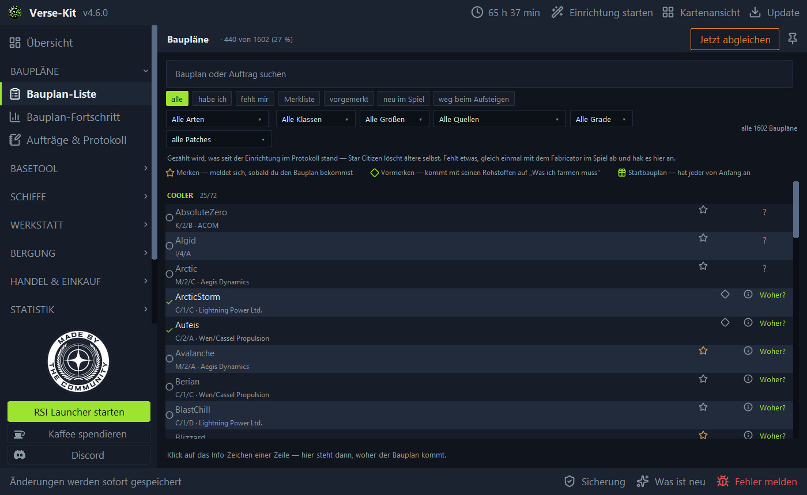

Bauplan-Tracker: neue Baupläne in Sekunden
Schaltest du einen Bauplan frei, steht er sofort in der Liste. VerseKit liest die Protokolle des Spiels mit, ohne ins Spiel einzugreifen.
Das Overlay meldet ihn dir direkt über dem Spiel: ein schmales Fenster, immer im Vordergrund, auf Wunsch durchklickbar.